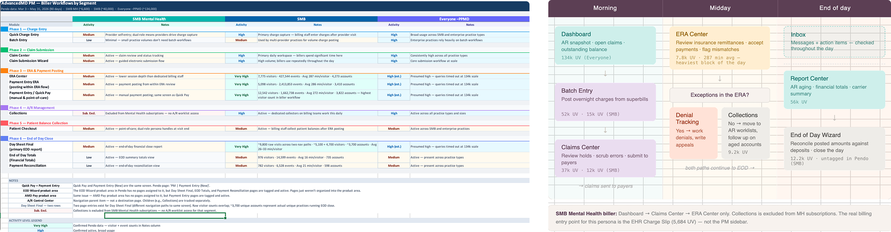
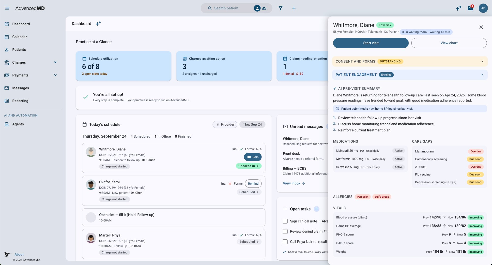
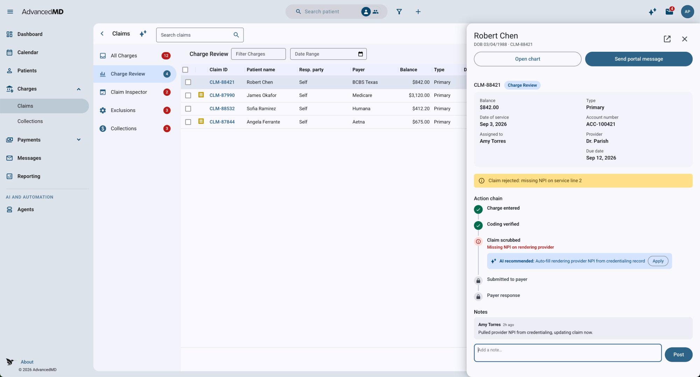
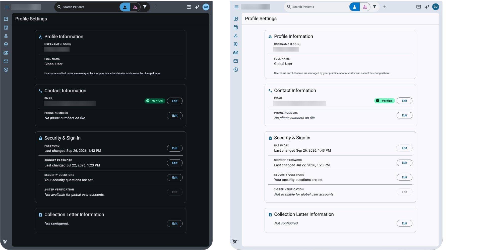

01 — The Problem
The platform outgrew
the practices we built it for.
AdvancedMD had spent years getting more capable. For small practices, it had also gotten more complicated.
small-to-midsize clients were leaving — many before they were even fully set up and taking payments.
Practice management and clinical work lived in different parts of the platform. Users had to understand where information lived, which side owned a task, and when they needed to move somewhere else to continue the workflow.
An earlier simplification approach focused largely on limiting features. Simplify gave us an opportunity to ask a different question:
What if we organized the experience around how a practice works instead of how the existing product was organized?
02 — Research
The barrier between the applications
was creating work.
I started by mapping how different roles actually moved through their day, then tested those workflows against client discovery, behavioral data, customer requests, and the structure of the existing product.
The navigation wasn't the starting point. The workflow was.
01 · Map the day
02 · Validate the patterns
03 · Translate workflow into architecture

03 — Architecture
One app. Keep the context.
The goal wasn't to put PM and EHR screens next to each other.
It was to stop making users care which product owned the task.
The dashboard brings forward work based on the user's role. Once a patient is opened, that patient context stays available as the user moves between clinical, scheduling, messaging, and financial work.
That led to a few structural rules:
Navigation follows work
Primary destinations reflect the workflows different roles actually move through.
Patient information stays with the patient
Users shouldn't have to repeatedly search for the same person as they move between related tasks.
Information appears where it's useful
Eligibility belongs with appointment workflows. Balances can surface where staff are interacting with patients. Not every capability needs another navigation destination.
Different roles can start differently
A provider, front-desk user, and biller don't begin their day with the same priorities, so the experience shouldn't assume they do.


04 — Platform
A new experience. Not another silo.
We'd tried starting from scratch before. Building an all-new backend and new APIs for the insurance billing process proved insurmountable.
Instead of rebuilding from the inside out, what if we worked from the outside in? Start with the experience users touch, and keep the proven backend underneath it.
Simplify wasn't designed as a separate product or a ground-up rewrite.
It runs on the same codebase as the existing platform, allowing the experience to modernize incrementally while continuing to use existing capabilities underneath it. Client-level feature controls and routing allow Simplified Mode to be enabled and tested without creating a separate branch or disrupting the existing legacy experience.
That means capabilities built elsewhere in AdvancedMD can surface inside Simplify rather than being rebuilt specifically for it.
The tradeoff is honest: some screens will still look dated while they wait for their UI refresh. But because Simplify and the main product share a design language, every screen we modernize benefits both.
A new experience on the same platform — not another silo. The base shell and new top navigation have already shipped as pieces of the Simplify infrastructure.
05 — Foundation
Modernize without creating
another thing to maintain.
The experience wasn't the only thing that needed modernization.
AdvancedMD's Angular Material library had been customized so heavily that it had become technical debt and blocked upgrades beyond Angular 18. Leadership had several options: invest heavily in upgrading the customized system, replace it with another proprietary library, or move back toward standard Angular Material 3.
We chose the third direction.
Use the standard when it solves the problem. Customize when the product actually requires it.
I helped define how and why components should be used, supported the shared Figma library, and created design resources that give Design and Engineering the same definitions and intent — including enough structured guidance to support AI-assisted development.
Simplify became the first major place to put that direction into practice.
Moving back to the standard also meant getting its built-in capabilities for free.
WCAG 2 accessibility, built in
Material 3 components ship with accessible contrast, focus states, and keyboard and screen-reader support, so accessibility isn't something we have to rebuild component by component.
Dark mode, built in
Theming comes from design tokens, so the same screens support light and dark modes without designing and maintaining a second UI.

06 — Status
Build the foundation for a better workflow.
Early validation with existing clients has been promising.
What exists today is the foundation: workflow-based architecture, the simplified shell, shared navigation patterns, patient context, and a UI system designed to evolve with the platform instead of becoming another layer of technical debt. The shell infrastructure allows Simplified Mode to be enabled per client while preserving the existing legacy experience.
Unified workflow surface
Users can move between clinical, scheduling, and billing tasks without switching between PM and EHR or repeatedly finding the same patient.
Built around the workflow
Navigation and scope came from how practices actually work, not from recreating existing PM and EHR menus.
A UI we can keep upgrading
Simplify starts with standard Material 3 instead of adding another deeply customized layer to maintain.
One platform, not another silo
Existing AdvancedMD capabilities can work inside Simplify instead of being rebuilt specifically for it.
The real test comes next: whether it actually makes running a small practice easier.